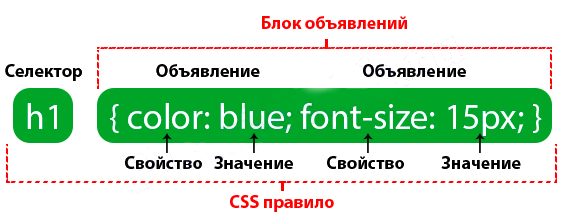

Таблица стилей составлена из одной и более инструкций (называемых правилами или наборами правил), которые описывают, как элемент или группа элементов должны отображаться.
Каждое правило выбирает элемент и объявляет, как он должен выглядеть
Согласно терминологии CSS существует две главные части правила — это селектор, устанавливающий элемент или элементы, на которые надо воздействовать, и определение, предоставляющее инструкции представления. Определение, в свою очередь, составлено из свойства (например, color) и его значения (green) , разделенных двоеточием и пробелом. Одно или более определений размещаются внутри фигурных скобок.
Определения
Определение составлено из пары свойство/значение. Допустимо использовать несколько определений в одном правиле, например, указанное выше правило для элемента <p> имеет свойства как font-size, так и font-family.
Каждое определение должно оканчиваться точкой с запятой для отделения его от следующего. Если вы пропустите этот знак препинания, то следующее за ним определение будет игнорироваться.

Фигурные скобки и заключенные в них определения часто называются блоком определения.
Из-за того, что таблицы CSS игнорируют пробельные символы и переходы на новую строку внутри блока определения, верстальщики обычно пишут каждое определение в блоке на отдельной строке, как показано в следующем примере. Благодаря этому легче найти свойства, применяемые к селектору, и сказать, где заканчивается правило описания стиля.